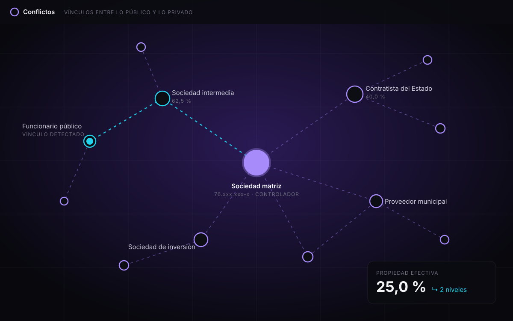
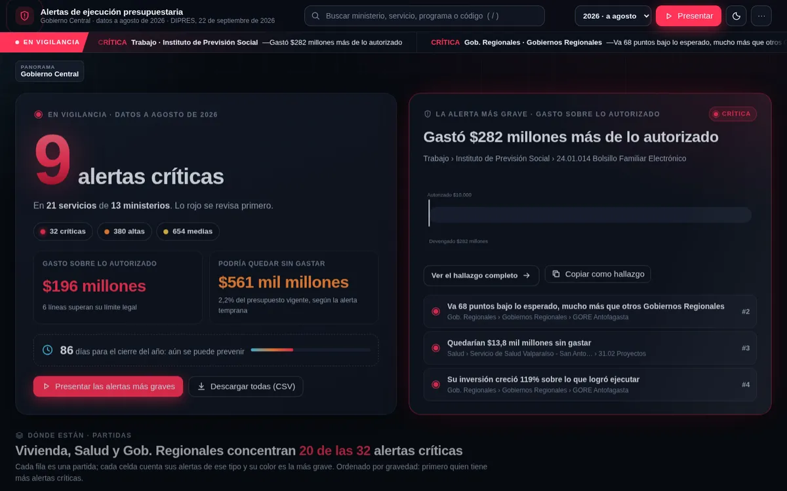
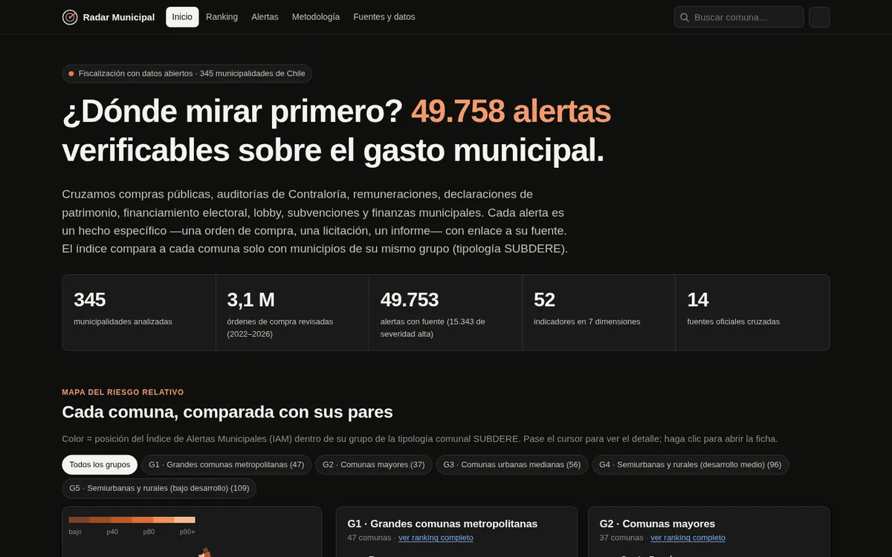
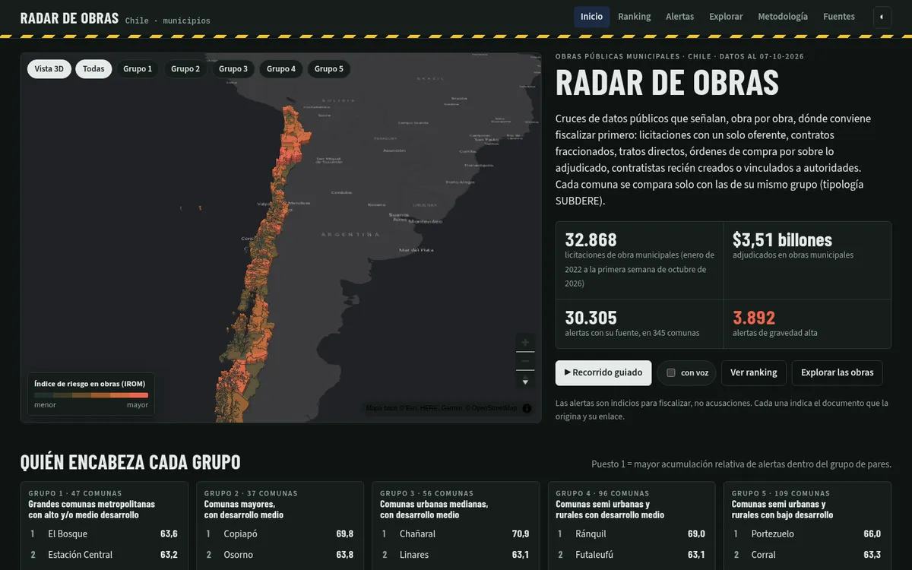

Índice de proyectosHaz clic para entrar
-
01
Conflictos
Quién es dueño de quién entre 3,4 millones de personas jurídicas, y sus vínculos con el Estado.

-
02
Alertas presupuestarias
Centro de alertas para fiscalizar la ejecución del presupuesto de Chile.

-
03
Radar Municipal
Alertas de gasto en los 345 municipios de Chile, cada comuna comparada con sus pares.

-
04
Radar de Obras
Alertas en obras públicas municipales: dónde conviene fiscalizar primero.

Millones de registros públicos, listos para leer.
0M
personas jurídicas con su malla societaria
Conflictos
0
municipalidades analizadas, una por una
Radar Municipal
0M
órdenes de compra municipales revisadas (2022–2026)
Radar Municipal
0
licitaciones de obras municipales cruzadas
Radar de Obras